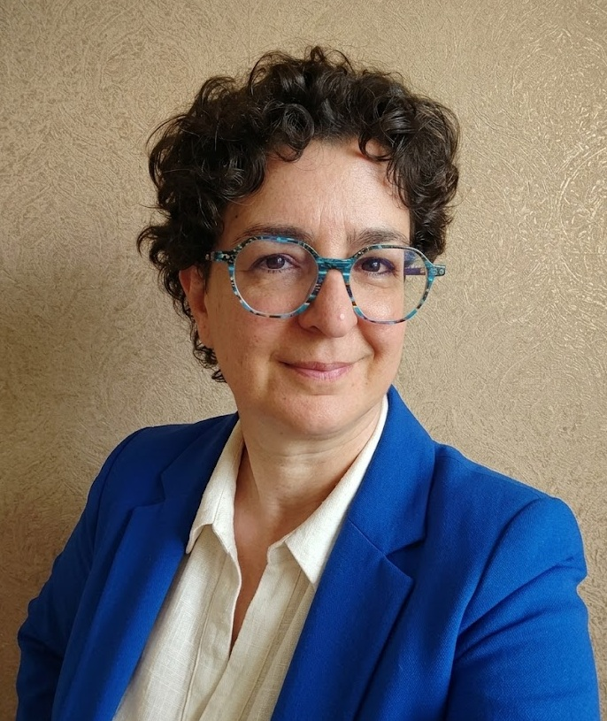

Conseil en IA pour la rédaction
Il existe pléthore de solutions pour rédiger des comptes-rendus, des réponses automatiques ou des contenus marketing. Quand on creuse, c'est rare qu'elles répondent pleinement au besoin.
IA et conception numérique
pour la rédaction professionnelle
Je conçois et teste des applications numériques pour la rédaction professionnelle. J'accompagne les gens de l'écrit à l'utilisation de ces applications.
Toulouse, Occitanie

À propos
Je suis ingénieure de formation et de cœur.
J'ai travaillé dans les technologies de l'information, côté IT au début puis dans la rédaction technique et professionnelle. En tant que rédactrice mais aussi pas mal dans l'accompagnement : correctrice pour une formation en rédac tech, onboarding des nouveaux rédacteurs de comptes-rendus, prof de communication professionnelle en école d'ingé.
Quand l'IA générative est apparue, j'ai été galvanisée. Je me suis formée dès début 2023, j'ai participé à un hackathon, j'ai suivi (tant bien que mal, comme tout le monde !) les progrès et les développements. (J'ai laissé une trace de ce chemin sur LinkedIn).
L'IA générative est désormais au cœur de mon activité professionnelle, soit parce qu'elle me permet de faire des choses que je ne ferais pas sans, soit parce que j'aide des entreprises à l'insérer intelligemment dans leur process.
Ce qui fait ma spécificité, c'est que :
Quel kif de vivre cette époque extraordinaire (oui, en dépit de tout le reste). Ça tient parfois du paradoxe ; se dire écolo et utiliser l'IA ; se dire humaniste et utiliser les outils des GAFAM. C'est vrai, l'ambivalence est bien là au quotidien.
Voici comment j'avance : j'essaie de rester sur un chemin d'exploration et de réflexion en même temps que de réalisation. Le numérique n'est pas neutre loin de là, mais je suis convaincue qu'avec une bonne boussole on peut utiliser l'IA pour amener la tech vers l'humain et vers le local.
On ne va quand même pas laisser l'intégralité du secteur aux mains des tech bros !
Je suis une scientifique, mais aussi une rêveuse : avec l'IA en assistante dévouée, la marche est moins haute pour se lancer dans l'entrepreneuriat dans le numérique. J'y vois la géniale possibilité de l'avènement d'un artisanat numérique de proximité (ce que Maggie Appleton appelle les home-cooked software by barefoot developpers).
Et c'est peut-être là, dans une conception et une réalisation de proximité, qu'on fait de la tech ce qu'elle devrait toujours être : un levier au service du bien commun.
Ce que je fais
Il existe pléthore de solutions pour rédiger des comptes-rendus, des réponses automatiques ou des contenus marketing. Quand on creuse, c'est rare qu'elles répondent pleinement au besoin.
La rédaction technique est autant structure et gestion de contenu que rédaction. Concevoir une documentation, c'est réfléchir au format, à la destination, à l'accessibilité et à la maintenance.
No-code (avec ou sans IA) et vibecoding permettent de créer des applications numériques sans investir dans du développement pur.
Accompagner les personnes qui commencent à utiliser l'IA, c'est éthique mais aussi malin — pour garder toutes les compétences !
Portfolio
Je construis régulièrement des petites applis de maths pour ma fille — un excellent cas d'usage avec une vraie utilisatrice.
Une appli en no-code permet à une asso de gérer ses adhérents simplement. Quelques heures par trimestre gagnées et beaucoup de frustration évitée.
Je me place dans une démarche d'amélioration continue pour mettre en place et promouvoir une utilisation responsable du numérique.
Échangeons !
Mes messages sont ouverts pour tout échange sur la co-intelligence avec l'IA générative, sur la tech pour les gens, sur le numérique responsable.